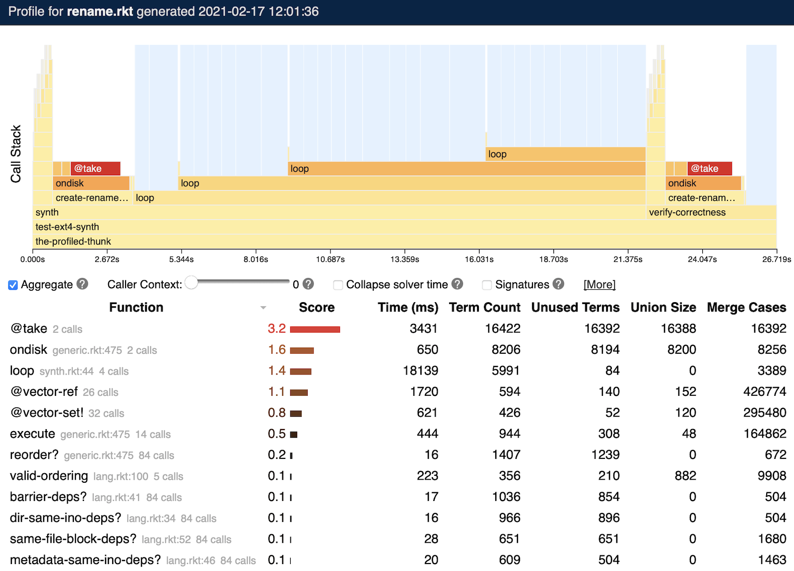
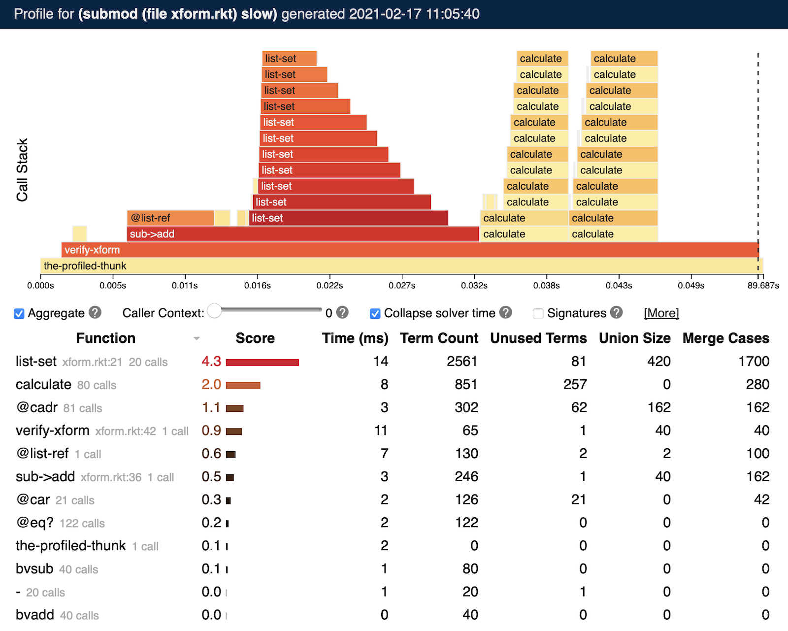

9 Performance
This chapter describes common performance problems in Rosette programs, how to solve them, and how to diagnose them with the built-in symbolic profiler.
9.1 Common Performance Issues
When a Rosette program performs poorly, it is often due to one of four common issues, described next.
9.1.1 Integer and Real Theories
Rosette supports assertions and assumptions containing symbolic values of integer or real type. But solving queries with these types is expensive (or, in the worst case, undecidable), and even simple queries can be unacceptably slow.
One solution is to change Rosette’s current-bitwidth parameter, which controls the reasoning precision used for queries. When current-bitwidth is set to a value k other than #f, Rosette approximates integer? and real? values using signed k-bit bitvectors, which can make queries involving integers and reals faster to solve.
But this approximation is unsound and may produce results that are incorrect under the infinite-precision semantics of integers and reals (while being correct under the finite-precision semantics). For example, this program incorrectly says that no integer greater than 15 exists, because the setting of current-bitwidth causes it to consider only values of "x" that can be represented as a 5-bit bitvector.
> (current-bitwidth 5) > (define-symbolic x integer?) > (solve (assert (> x 15))) (unsat)
So, choosing the right reasoning precision for an application involves navigating this tradeoff between performance and soundness.
9.1.2 Algorithmic Mismatch
Small algorithmic changes can have a large impact on the
efficiency of symbolic evaluation. Often, the most efficient
algorithm for symbolic inputs is different to the most
efficient one for concrete inputs—
For example, consider this function to set the idxth element of a list lst to val:
> (define (list-set lst idx val) (let-values ([(front back) (split-at lst idx)]) (append front (cons val (cdr back))))) > (list-set '(a b c) 1 'd) '(a d c)
While appropriate for concrete inputs, this function exhibits poor performance when the inputs are symbolic:
> (define-symbolic idx len integer?) > (define lst (take '(a b c) len)) > (list-set lst idx 'd) ; Symbolic union with 6 parts. (union #:size 6 #:hash -437123915298968900)
The root cause is the split-at operation, which separates the front and back of the list into different variables. Because the index idx to split at is symbolic, Rosette creates two symbolic unions to capture the possible front and back values as a function of idx. Even though the possible values of front and back are related, this separation loses the relationship.
A better implementation for symbolic inputs avoids splitting the list by iterating over it, updating each position depending on whether its index is equal to idx:
> (define (list-set* lst idx val) (for/all ([lst lst]) (map (lambda (i v) (if (= idx i) val v)) (build-list (length lst) identity) lst))) > (list-set* '(a b c) 1 'd) '(a d c)
> (list-set* lst idx 'd) ; Smaller symbolic union with 4 parts. (union #:size 4 #:hash -976833215883912073)
9.1.3 Irregular Representation
Just as the best algorithm for symbolic inputs can differ from that for concrete inputs (an algorithmic mismatch), so can the best data structure. Programming with symbolic values is most efficient when data structures are regular. Even though an irregular representation may be more space efficient for concrete data, it can have negative performance impacts when the data is symbolic.
For example, consider representing a (mutable) 2D grid data structure using Rosette’s lifted support for vectors. The obvious representation is to use nested vectors to represent the two dimensions:
> (define-values (width height) (values 5 5)) > (define-symbolic x y integer?)
> (define grid/2d (for/vector ([_ height]) (make-vector width #f))) > (vector-set! (vector-ref grid/2d y) x 'a)
This representation is inefficient when indexed with symbolic values, because the dereferences are irregular: the dereference of the y-coordinate returns a vector, whereas the dereference of the x-coordinate returns a value. This irregularity requires Rosette to perform more symbolic evaluation work to faithfully track the usages of the nested vector.
An alternative representation stores the entire grid in one vector, indexed using simple arithmetic:
> (define grid/flat (make-vector (* width height) #f)) > (vector-set! grid/flat (+ (* y width) x) 'a)
This variant improves performance by about 2×.
9.1.4 Missed Concretization
In addition to employing careful algorithmic and representational choices, fast solver-aided code provides as much information as possible about the feasible choices of symbolic values. Failure to make this information explicit results in missed concretization opportunities, leading to performance degradation.
For example, consider the following toy procedure, that returns the idxth element of the list lst, but only if idx is 0 or 1:
> (define (maybe-ref lst idx) (if (<= 0 idx 1) (list-ref lst idx) -1)) > (define-symbolic idx integer?) > (maybe-ref '(5 6 7) idx)
(ite
(&& (<= 0 idx) (<= idx 1))
(ite* (⊢ (= 0 idx) 5) (⊢ (= 1 idx) 6) (⊢ (= 2 idx) 7))
-1)
This procedure has poor performance when given a symbolic index idx, because the call to (list-ref lst idx) passes a symbolic index, but the conditional establishes that the only possible values for that index are 0 or 1. When Rosette evaluates the first side of the conditional, it does not simplify the value of idx to be only 0 or 1, and so the resulting encoding creates infeasible branches for cases where idx is outside that range. An alternative version captures that concreteness:
> (define (maybe-ref* lst idx) (cond [(= idx 0) (list-ref lst 0)] [(= idx 1) (list-ref lst 1)] [else -1])) > (maybe-ref* '(5 6 7) idx) (ite (= 0 idx) 5 (ite (= 1 idx) 6 -1))
This variant avoids generating infeasible return values for the cases where idx is greater than 1.
9.2 Symbolic Profiling
Rosette includes a symbolic profiler
for diagnosing performance issues in solver-aided programs.
The symbolic profiler instruments key metrics in Rosette’s
symbolic evaluator and relates them to the performance of a
Rosette program, suggesting the locations of potential
bottlenecks—
To run the symbolic profiler on a program file ‹prog›, use the raco command:
raco symprofile ‹prog›
After executing ‹prog›, the symbolic profiler produces a browser-based output summarizing the results, similar to this output:

The top half of this output visualizes the evolution of the Racket call stack over time. Each procedure call is a rectangle in this chart, with its width corresponding to the total time taken by the call. Blue highlighted regions reflect solver activity generated by Rosette queries.
The bottom half summarizes important metrics about the symbolic evaluation on a per-procedure basis. Each procedure invoked by the program has a row in the table, with columns that measure:
The total time taken by all invocations of the procedure.
The term count, which is the total number of symbolic terms created by the procedure.
The number of unused terms, which are terms created but never sent to a solver.
The union size, which is the total size of all symbolic unions created by the procedure.
The merge cases, which is the total number of execution paths merged by Rosette within the procedure.
Procedures are ranked by a score, which summarizes the other data in the table. Procedures with higher scores are more likely to be bottlenecks, and should be investigated first for performance issues.
9.2.1 Options and Caveats
By default, the symbolic profiler instruments only code that is within a module whose initial module path is either rosette or rosette/safe. In other words, only files beginning with #lang rosette or #lang rosette/safe will be instrumented. To instrument all code, use the --racket flag described below.
Similarly, by default, the symbolic profiler instruments only code that does not belong to installed packages. To instrument given installed packages, use the --pkg flag described below.
The raco symprofile ‹prog› command accepts the following command-line flags:
--stream —
stream profile data to a browser while executing the program, rather than producing output only once the program completes. This option is useful for programs that do not terminate, or take a very long time to run. -d ‹delay› —
delay between samples when using the --stream option, in seconds (defaults to 2 s). -m ‹module-name› —
run the specified ‹module-name› submodule of ‹prog› (defaults to the main submodule). -t ‹threshold› —
prune function calls whose execution time is less than ‹threshold› milliseconds (defaults to 1 ms). --racket —
instrument code in any language, not just those derived from Rosette. --pkg ‹pkg-name› —
instrument code in ‹pkg-name›.
9.3 Walkthrough: Debugging Rosette Performance
To illustrate a typical Rosette performance debugging process, consider building a small solver-aided program for verifying optimizations in a toy calculator language. First, we define the calculator language, in which programs are lists of operations, and specify its semantics with a simple recursive interpreter:
; Calculator opcodes.
(define-values (Add Sub Sqr Nop) (values (bv 0 2) (bv 1 2) (bv 2 2) (bv 3 2))) ; An interpreter for calculator programs. ; A program is a list of '(op) or '(op arg) instructions ; that update acc, where op is a 2-bit opcode and arg is ; a 4-bit constant.
(define (calculate prog [acc (bv 0 4)]) (cond [(null? prog) acc] [else (define ins (car prog)) (define op (car ins)) (calculate (cdr prog) (cond [(eq? op Add) (bvadd acc (cadr ins))] [(eq? op Sub) (bvsub acc (cadr ins))] [(eq? op Sqr) (bvmul acc acc)] [else acc]))]))
One potential optimization for programs in this language is to replace subtractions with additions. The sub->add procedure performs this operation at a given index in a program:
; Functionally sets lst[idx] to val.
(define (list-set lst idx val) (match lst [(cons x xs) (if (= idx 0) (cons val xs) (cons x (list-set xs (- idx 1) val)))] [_ lst])) ; Replaces Sub with Add if possible.
(define (sub->add prog idx) (define ins (list-ref prog idx)) (if (eq? (car ins) Sub) (list-set prog idx (list Add (bvneg (cadr ins)))) prog))
To check that this optimization is correct, we implement a tiny verification tool verify-xform that constructs a symbolic calculator program of size N, applies the optimization, and checks that the original and optimized programs produce the same outputs:
; Verifies the given transform for all programs of length N.
(define (verify-xform xform N) (define P (for/list ([i N]) (define-symbolic* op (bitvector 2)) (define-symbolic* arg (bitvector 4)) (if (eq? op Sqr) (list op) (list op arg)))) (define-symbolic* acc (bitvector 4)) (define-symbolic* idx integer?) (define xP (xform P idx)) (verify (assert (eq? (calculate P acc) (calculate xP acc)))))
We can verify sub->add for all calculator programs of size 5:
> (verify-xform sub->add 5) (unsat)
This produces no counterexamples, as expected.
9.3.1 Performance Bottlenecks
Verifying sub->add for larger values of N causes the performance of verify-xform to degrade, from a couple of seconds when N = 5 to over a minute when N = 20. To identify the source of this performance issue, we can invoke the symbolic profiler on the verifier, producing the output below (after selecting the "Collapse solver time" checkbox):

The symbolic profiler identifies list-set as the bottleneck in this program. The output shows that list-set creates many symbolic terms, and performs many symbolic operations (the "Union Size" and "Merge Cases" columns).
The core issue here is an algorithmic mismatch: list-set makes a recursive call guarded by a short-circuiting condition (= idx 0) that is symbolic when idx is unknown. When a condition’s truth value is unknown, Rosette must execute both branches of the conditional, and then merge the resulting symbolic values. So, in our example, Rosette always executes the recursive call, and each call creates a larger symbolic value that encodes the results of all the previous recursive calls. This behavior leads to a quadratic growth in the symbolic representation of the list returned by list-set:
> (define-symbolic idx integer?) > (list-set '(1 2 3) idx 4)
(list
(ite (= 0 idx) 4 1)
(ite (= 0 idx) 2 (ite (= 0 (+ -1 idx)) 4 2))
(ite (= 0 idx) 3 (ite (= 0 (+ -1 idx)) 3 (ite (= 0 (+ -2 idx)) 4 3))))
The solution is to alter list-set to recurse unconditionally:
(define (list-set* lst idx val) (match lst [(cons x xs) (cons (if (= idx 0) val x) (list-set* xs (- idx 1) val))] [_ lst]))
In this revision, Rosette still evaluates both branches of the conditional, but neither side of the conditional recurses, and so the verification conditions no longer grow quadratically.
> (list-set* '(1 2 3) idx 4)
(list
(ite (= 0 idx) 4 1)
(ite (= 0 (+ -1 idx)) 4 2)
(ite (= 0 (+ -2 idx)) 4 3))
The performance of verify-xform after this change improves by 3× for N = 20.